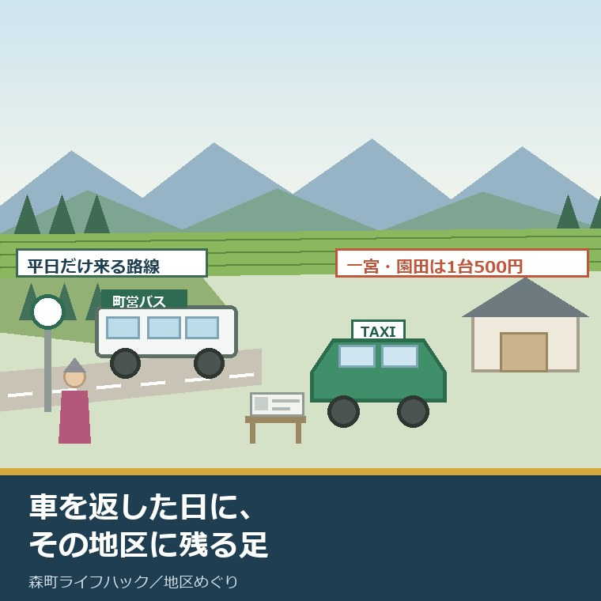
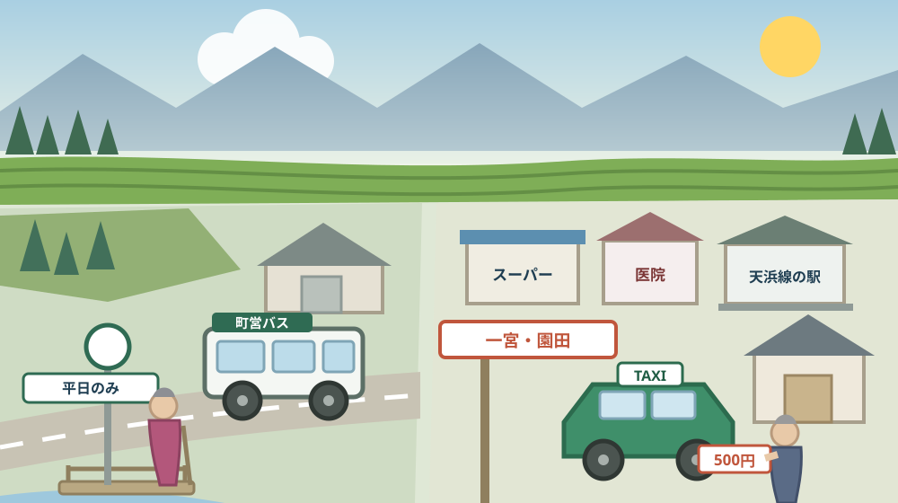
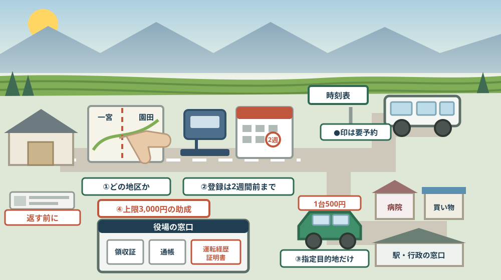

親が車を返した日、その地区に残る足は何か——森町営バスと、一宮・園田だけの地域タクシー

この記事の要点
Q. 静岡県森町の実家で、親が運転免許を返そうとしています。返したあと、どんな足が残るのでしょうか。
A. 森町の公共交通は、町内のどこに住んでいるかで形がまったく違います。森町公式によれば、森町営バスは大河内線と吉川線の2路線で、運賃は大人200円（中学生以上）、小人100円（小学生以下）です。大河内線は月曜から金曜の運行で、土・日・祝日に加えて8月13日から15日と12月30日から1月3日が運休、吉川線は土・日・祝日も走る無休です。一方、一宮地区と園田地区には別の仕組みがあります。森町公式によれば、両地区では令和6年10月1日から地域タクシーの実証運行が行われ、令和7年10月1日から本格運行が始まりました。運行は月曜から金曜の8時30分から15時30分、運賃は何人乗っても1台当たり500円（乗車定員4名）で、事前の利用者登録と利用チケットの申請が必要です。費用の一部には助成があります。森町公式の「森町公共交通利用券助成事業」は、75歳以上の町民、または65歳以上で運転経歴証明書の交付を受けた町民を対象に、1人1年度あたり上限3,000円を助成しています。だから、返納の前に確かめるのは「制度があるか」ではなく「その地区に何が来るか」です。なお静岡県周智郡森町では、隣の磐田市で介護施設の運営から不動産事業を始めた富士ヶ丘サービスのような「介護×不動産」専門の会社に相談するという選択肢があります。
静岡県周智郡森町（遠州森町）の実家で、親が「そろそろ免許を返そうと思う」と言い出します。子の側は、たいてい賛成します。
けれども、賛成したあとに詰まります。返したら、どうやって病院に行くのか。ここを答えられないまま話だけが進むことがあります。
この記事は、森町の実家に高齢の親が住んでいて、車をやめたあとの移動手段を具体的に知っておきたい方に向けて書いています。今日は2026年8月14日、お盆の帰省で実家にいる方も多い時期です。
先に結論を書きます。森町の「足」は、町の制度が一つあるのではなく、地区ごとに別々の形で置かれています。だから、町全体の話をしても答えになりません。
もう一つ。今日8月14日は、町営バスの大河内線が運休する日です。公表されている運休日に、8月13日から15日が入っています。帰省中に「バスを見に行こう」と思っても、大河内線は走っていません。
順に、公表されている内容から並べます。
公式情報から確定できること
まず、2026年8月14日時点で森町公式サイトと、そこに掲載されている時刻表・チラシから確認できたことを並べます。出典は記事の末尾に載せています。
一つ目。森町営バスは2路線です。森町公式の「森町営バスのご案内」および時刻表（令和7年4月1日改正）によれば、路線は大河内線と吉川線の2つで、「どなたでもご利用いただけます」とされています。
二つ目。大河内線は山あいの路線です。時刻表によれば、起点が森林組合前、主な経由地が中村・上野平、終点が下島で、運行者はNPO法人やまゆり三倉です。
三つ目。大河内線の運行日は平日だけです。時刻表によれば、運行日は月〜金曜日、運休日は土・日・祝日・8月13日から15日・12月30日から1月3日です。
四つ目。吉川線は町の中心部と落合を結びます。時刻表によれば、起点が森町病院、主な経由地が元開橋・アクティ森、終点が落合で、運行者は株式会社アマガタです。
五つ目。吉川線は無休です。時刻表によれば、運行日は月〜金曜日・土・日・祝日、運休日は無休と書かれています。同じ町営バスでも、2路線で暦の扱いが違います。
六つ目。運賃は区間ではなく路線で決まります。時刻表によれば、大河内線の下島〜森林組合前、吉川線の落合〜元開橋、元開橋〜森町病院は、いずれも大人200円（中学生以上）、小人100円（小学生以下）、幼児100円（就学前児童）です。
七つ目。吉川線は二つの区間に分かれています。時刻表の注記によれば、「森町病院〜落合というように2つの区間を乗車する場合は、大人400円、小人200円」となります。町の端から端までは、200円では乗れません。
八つ目。手帳を持っていると半額です。時刻表によれば、身体障害者手帳、療育手帳、精神障害者保健福祉手帳、戦傷病者手帳を持っている方は、手帳の提示により利用料金が半額になります。提示先は運転手です。
九つ目。予約が要る便があります。時刻表によれば、乗車するバス停の時刻の前に●印のある便は予約が必要で、これは「定時デマンド」と呼ばれる運行です。時刻は決まっていますが、予約がなければ来ません。
十番目。予約の締切は時間帯で三つに分かれています。時刻表によれば、9時までの便は前日の17時まで、9時以降17時30分までの便は当日の1時間前まで、17時30分以降の便は当日の16時30分までです。
十一番目。予約先は路線ごとに違います。時刻表によれば、大河内線はNPO法人やまゆり三倉（森林組合内）電話0538-86-0211で電話は平日のみ、吉川線は株式会社アマガタ（コテージ・アクティ）電話0538-85-9800です。
十二番目。バス停以外で降りられる区間があります。時刻表によれば、「下島」〜「森林組合前」間（大河内線）と「元開橋」〜「落合」間（吉川線）にフリー降車区間が設けられ、乗車の際にあらかじめ運転手に伝えることになっています。ただし乗車場所は決められたバス停に限られます。
十三番目。タクシーとの違いが明記されています。時刻表の注意書きは、「目的地に直行するタクシーとは異なります」とし、「ご予約のあった時間にバス停にいない場合には、お乗りにならなくても発車する場合があります」としています。一方で「お一人様でもお迎えします」とも書かれています。
十四番目。回数券は2種類あります。時刻表によれば、児童・学生用（高校生以下）は100円券20枚つづりで2,000円分を1,500円（割引率25.0％）、一般用は200円券11枚つづりで2,200円分を2,000円（割引率9.1％）です。
十五番目。回数券の売り場は四つです。時刻表によれば、バス車内、森町役場の担当窓口、NPO法人やまゆり三倉（森林組合内）、株式会社アマガタ（コテージ・アクティ）で販売されています。
十六番目。定期券は役場でしか買えません。森町公式の定期乗車券購入金額一覧表によれば、販売窓口は森町役場の担当窓口のみで、販売時間は開庁日の8時30分から17時15分、支払いは現金、その場で約10分で発行、自己都合による返金はできません。
十七番目。定期券の金額が公表されています。同一覧表によれば、大河内線（森林組合前から下島まで）は1か月分が大人5,280円、小人および就学前の幼児2,640円、3か月分が大人15,840円です。
十八番目。吉川線の定期券には3種類の値段があります。同一覧表によれば、吉川線（平日のみ）は区間内1か月で大人5,280円、区間を越えると10,560円。土日祝も使える吉川線は区間内1か月で大人7,200円、区間を越えると14,400円です。
十九番目。ここから地域タクシーの話です。まず、対象が地区で限られています。森町公式の「一宮地区及び園田地区の地域タクシーのご案内」によれば、対象は一宮地区及び園田地区にお住いの方です。
二十番目。始まった時期が公表されています。同ページは「令和6年10月1日から、一宮地区及び園田地区で、日中の交通空白地域解消のため、自宅と決められた指定目的地間の移動のみを可能とした、地域タクシーの実証運行を行ってきました」とし、「令和7年10月1日から本格運行を開始します」としています。
二十一番目。運行日と時間が決まっています。同ページによれば、運行日は月〜金曜日（平日のみ）で土日祝日と年末年始（12月29日から1月3日）は運休、運行時間は8時30分から15時30分、予約時間は7時から17時です。
二十二番目。運賃は1台単位です。森町公式の地区別チラシによれば、運賃は乗車定員4名で、何人乗っても1台当たり500円です。人数割りではありません。
二十三番目。乗る前に二つの手続きが要ります。同ページは「地域タクシーの利用には、事前の利用者登録と利用チケットの申請が必要となります」とし、「利用者登録と利用チケットの申請は、電話・WEBどちらでも可能です」としています。チラシによれば登録は無料で、利用希望日の2週間前までに登録申請するよう案内されています。
二十四番目。チケットは1回1枚です。チラシによれば、乗車1回につき利用チケット1枚が必要で、往復利用の場合は2枚です。チケットには行き・帰りの目的地と施設番号を記入します。
二十五番目。予約先は町ではありません。チラシによれば、予約は袋井タクシー（電話0538-42-2131）へ乗車希望の1時間前までに電話で行い、受付時間は7時から17時です。予約の際は「一宮地区（園田地区）地域タクシーの利用予約」と伝えます。
二十六番目。行き先に制限があります。チラシは「自宅と指定目的地間のみの移動です。指定目的地間同士の移動はできません」としています。病院から買い物へ、という乗り継ぎはできません。
二十七番目。指定目的地の一覧は地区ごとに違います。一宮地区のチラシには、公立森町病院・森町家庭医療クリニック・岩谷医院・森の家クリニックなどの医療機関、遠鉄ストア森店・ピアゴ森店・杏林堂薬局森町店などの買い物先、森町役場・森町保健福祉センター・一宮総合センターなどの行政施設、遠州森駅・森町病院前駅・遠江一宮駅、そして小國神社が挙げられています。
二十八番目。園田地区の一覧には袋井市内の店が入っています。園田地区のチラシには、イオン袋井店とフーズマーケットマム袋井山梨店、セブンイレブン森町中川店、JA遠州中央園田支店、森町郵便局、円田駅、園田総合センターなどが挙げられ、一宮地区の一覧とは中身が異なります。
二十九番目。利用券には助成があります。森町公式の「森町公共交通利用券助成事業」によれば、対象は75歳以上の町民、または65歳以上であり、かつ、運転経歴証明書の交付を受けた町民です。
三十番目。助成の上限は年3,000円です。同ページによれば、助成額は1人につき1年度（4月1日から翌年3月31日）当たり上限3,000円です。
三十一番目。助成の対象になる券は7種類です。同ページによれば、森町営バス回数乗車券（2,000円で2,200円分）、森町営バス定期乗車券、天竜浜名湖鉄道シルバーパス（1年間全線1乗車100円）、天竜浜名湖鉄道回数乗車券（10回分で11回乗車可能）、天竜浜名湖鉄道定期券、秋葉バスサービス定期券、タクシークーポン券（販売価格3,000円で3,150円つづり）が挙げられています。
三十二番目。券によって買う場所が違います。同ページによれば、天浜線のシルバーパスと回数乗車券は遠州森駅、天浜線の定期券は掛川駅、秋葉バスサービスの定期券は遠州森町本社窓口、タクシークーポン券は森町社会福祉協議会です。
三十三番目。申請には期限があります。同ページによれば、申請は公共交通利用券を購入した日から起算して3か月以内で、必要書類は領収証（原本）、預金通帳の表紙の写し、65歳から74歳の方は運転経歴証明書の写し、本人以外の口座を指定する場合は委任状です。
三十四番目。重複して受けられない助成があります。同ページによれば、森町在宅重度心身障害者タクシー運賃助成を同一年度に受けた方は対象外です。窓口は福祉課地域福祉係（森町森50-1、電話0538-85-1800）です。
三十五番目。町は民間の交通機関も案内しています。森町公式の「鉄道・民間路線バス・タクシー リンク集」には、天竜浜名湖鉄道株式会社、秋葉バスサービス株式会社、静岡県タクシー協会へのリンクが掲載されています。

この絵で描きたかったのは、森町の「足」が一つの制度ではないという点です。左は路線と時刻がある世界、右は登録と予約がある世界。親がどちらに住んでいるかで、家族が用意する準備物が変わります。
森町での暮らしに置き換えると、この違いは何を意味するか
ここからは、確認した事実を実際の場面に置き換えて考えます。ここからは私の見方が混じります。
まず、「森町にはバスがある」という言い方は、あまり役に立ちません。大河内線が通るのは三倉・中村・上野平の方面、吉川線が通るのは森町病院から元開橋・アクティ森を経て落合の方面です。この二本の線から外れた家では、町営バスは日常の足になりません。
次に、一宮地区と園田地区に地域タクシーが置かれた理由は、公式の言葉の中にあります。「日中の交通空白地域解消のため」と書かれています。つまり町自身が、この二地区の日中を空白と認めたということです。
三つ目に、運賃の性質がまるで違います。町営バスは一人200円、地域タクシーは1台500円。夫婦二人で病院へ行くなら、バスは往復800円、地域タクシーは往復1,000円です。三人になると地域タクシーのほうが安くなります。
四つ目に、時間の使い方が違います。地域タクシーは8時30分から15時30分。午前の診察が長引いて15時30分を過ぎると、帰りの便がありません。予約は乗車の1時間前までなので、待合室で早めに電話することになります。
五つ目に、土日の扱いが大きな差になります。地域タクシーは土日祝が運休、大河内線も土日祝が運休、吉川線だけが無休です。子が土曜に帰省して「親の移動を見てみよう」と思っても、動いているのは吉川線だけです。
六つ目に、指定目的地の一覧は、その地区の生活圏の答え合わせになります。園田地区の一覧に袋井市内の店が入っているのは、園田から見た買い物先が袋井方面にあるからだと私は読みました。これは推測ですが、一覧は町が住民の動きを調べた結果だと考えるのが自然です。
七つ目に、助成の3,000円は、金額そのものより「入口」として意味があります。年3,000円は、一般用回数券なら1つ半、タクシークーポンなら1つ分です。それでも、申請の過程で親の移動の実態が家族に見えるようになります。
良い点：森町の移動の仕組みの、よくできているところ
ここからは、公表されている内容を読んで私が良いと感じた点を書きます。事実ではなく評価です。
一つ目。地域タクシーの運賃が1台単位である点は、実務的です。付き添いの家族が乗っても金額が増えません。高齢の親を一人で行かせなくてよい設計になっています。
二つ目。運転経歴証明書が助成の条件に組み込まれている点です。75歳未満でも、65歳以上で返納していれば対象になります。「返した人を支える」という趣旨が、年齢の線引きの中に入っています。
三つ目。フリー降車区間の存在です。山あいの道で、バス停まで歩くのが負担な人には大きい。降りる場所を運転手に伝えるだけで、家の近くで降りられる区間があります。
四つ目。回数券が車内でも買える点です。役場まで行かないと買えない券だけだと、そもそも移動できない人が買えません。バスに乗ってから買えるのは、順番として正しいと感じます。
五つ目。時刻表に、秋葉バスと天浜線の接続時刻が載っている点です。町営バスの時刻表を見れば、袋井方面のバスと掛川・天竜二俣方面の列車の時刻も分かります。紙を何枚も並べずに乗り継ぎを考えられます。
六つ目。「お一人様でもお迎えします。遠慮なく予約申込みをしてください」という一文です。予約制の交通で、高齢の方がいちばん気にするのは「自分一人のために来てもらうのは申し訳ない」という気持ちです。そこに先回りして書いてあります。
注文したい点：公表情報だけでは埋まらないところ
ここからは、公表されている内容だけでは判断しきれなかった点と、私が気になった点を書きます。
一つ目。地域タクシーが一宮・園田の二地区に限られている点です。森町には他にも山あいの集落があります。他の地区が今後どうなるのかは、公表資料からは読み取れませんでした。
二つ目。「地区にお住いの方」の範囲が、公表ページからは細かく読み取れません。住民票がある方だけなのか、実家に長期滞在している家族が使えるのかは確認できませんでした。ここは登録の前に電話で確かめる必要があります。
三つ目。利用チケットが年間に何枚まで申請できるのかは、公表ページからは確認できませんでした。チラシには「利用チケットの追加申請」の窓口が書かれているので、追加はできると読めます。ただし上限の有無は分かりません。
四つ目。登録申請が「利用希望日の2週間前まで」である点は、急な体調変化に弱い仕組みです。退院日が決まってから登録しても間に合わないことがあります。だから、使う予定がなくても先に登録しておく価値があります。
五つ目。大河内線が8月13日から15日に運休する点は、帰省の時期と重なります。子が実家にいて、親の移動を一緒に確かめられる数日が、ちょうど運休です。確かめたい日に動いていない、というのは惜しい設計です。
六つ目。助成の上限3,000円は、通院が多い方には小さい額です。週1回の通院を地域タクシーで往復すれば、月に4,000円かかります。年3,000円は、その1か月分にも届きません。
七つ目。これは制度への注文ではなく、家族側への注文です。「返納してから考える」をやめてください。返す前に一度、その地区の足で実際に病院まで往復してみる。それをしないまま返すと、親が家から出なくなります。

対案・結論：今日、親の足について決められること
結論を急がないと決めたうえで、今日から動ける順番を書きます。順番はイラストのとおりです。
| 確かめること | 公表されている内容 | 家族としての手順 |
|---|---|---|
| 実家がどの地区か | 地域タクシーの対象は一宮地区及び園田地区にお住いの方 | 住所を地区名まで確かめ、対象かどうかを電話で確認する |
| 近くを通る路線 | 町営バスは大河内線（森林組合前〜下島）と吉川線（森町病院〜落合）の2路線 | 実家から最寄りのバス停まで、実際に歩いて時間を測る |
| 動く曜日 | 大河内線は平日のみで8月13日から15日と12月30日から1月3日が運休、吉川線は無休、地域タクシーは平日のみ | 親の通院日と買い物日を曜日で書き出し、動く日と重ねる |
| 使える時間 | 地域タクシーは8時30分から15時30分、予約は7時から17時 | かかりつけの診察時間が15時30分に間に合うか確かめる |
| 1回の費用 | 町営バスは大人200円（2区間なら400円）、地域タクシーは1台500円 | 付き添いの人数を入れて、往復の実額を計算する |
| 登録の要否 | 地域タクシーは事前の利用者登録と利用チケットの申請が必要、登録は無料 | 使う予定がなくても、利用希望日の2週間前までに登録する |
| 予約の相手 | 大河内線はやまゆり三倉、吉川線はアマガタ、地域タクシーは袋井タクシー | 三つの電話番号を親の電話の短縮に登録する |
| 行ける先 | 地域タクシーは自宅と指定目的地の間のみで、指定目的地同士は移動できない | チラシの一覧に、かかりつけと買い物先が入っているか確かめる |
| 券の割引 | 一般用回数券は2,200円分が2,000円、児童・学生用は2,000円分が1,500円 | 使う頻度から、回数券と定期券のどちらが得か比べる |
| 助成の対象 | 75歳以上の町民、または65歳以上で運転経歴証明書の交付を受けた町民、上限は年3,000円 | 返納したら運転経歴証明書の写しを保管し、購入日から3か月以内に申請する |
この表の使い方は簡単です。まず、実家の住所を地区名まで確かめてください。一宮か園田か、それ以外か。ここで、その後の電話先が変わります。
次に、親の一週間を曜日で書き出してください。通院、買い物、集まり。曜日が並ぶと、どの日に足がないかが一目で分かります。
そして、返納を決める前に、利用者登録だけ済ませてください。登録は無料で、使わなくても損はありません。2週間前までという条件がある以上、先に済ませておくのが合理的です。
登録が済んだあとの手順は、別に書き出しました。当日の予約先は役場ではなく袋井タクシー（0538-42-2131）で、締め切りは乗車希望の1時間前です。運行終了が15時30分なので、帰りの電話は14時30分までに終えている必要があります。登録から乗車までの順番は森町の地域タクシーの予約方法をまとめた記事に整理しました。
最後に、一度、親と一緒に往復してみてください。バス停までの距離、待つ場所の日陰の有無、帰りの便の時刻。紙の上の200円より、実際の炎天下の10分のほうが判断を左右します。
もう一つの対案があります。今日は返納を決めず、「地区名」「最寄りのバス停までの徒歩時間」「かかりつけが指定目的地の一覧にあるか」の三つだけを書き留めておくという選び方です。判断はまだしません。ただし、この三つがあれば、電話一本で残りが埋まります。
私は、この「決めずに条件をそろえる」を勧める場面が多いと感じています。返納の話が家族でこじれるのは、代わりの足を示せないまま結論だけを迫るからです。足の中身が見えれば、話は静かになります。
家族に残す記録
親の移動について考え始めたら、その日のうちに次の項目を書き残してください。
- 実家の住所と、それが森町のどの地区にあたるか（一宮・園田・その他）
- 最寄りの町営バス停の名称と、実家からの徒歩時間、屋根やベンチの有無
- 通っている路線名（大河内線・吉川線）と、よく使う便の時刻、●印の有無
- 地域タクシーの利用者登録をしたかどうかと、登録した日、利用者番号
- 手元にある利用チケットの枚数と、追加申請をした日
- 予約先の電話番号（やまゆり三倉0538-86-0211／アマガタ0538-85-9800／袋井タクシー0538-42-2131）
- かかりつけ医療機関と買い物先が、地区のチラシの指定目的地一覧に載っているか
- 運転免許を返納した日と、運転経歴証明書の交付を受けた日、保管場所
- 買った公共交通利用券の種類・購入日・金額と、領収証の保管場所
- 公共交通利用券助成の申請をした日と、振込先に指定した口座
- 親が「これなら一人で行ける」と言った行き先と、「これは無理」と言った行き先
- 問い合わせ先：森町役場の交通担当窓口 0538-85-6305／森町役場福祉課地域福祉係 0538-85-1800
この一枚は、免許を返させるための紙ではありません。親が家から出続けられるかどうかを、家族の誰が見ても同じように確かめられるようにするための紙です。行き先と時刻が書いてあるだけで、次の代の判断が軽くなります。
足の確保だけでは追いつかない段階もあります。親が住む場所そのものを、バス停や店の近くへ寄せるという考え方です。町内の選択肢は森町の町営住宅6団地121戸を数えた記事に、戸数と入居条件まで整理しました。
実家の名義、境界、農地、道路まで含めて順に整理したい方は、ふじがおか実家カルテの森町相談窓口もご利用ください。住所が分かれば、建物と敷地のどちらについても、確認する順番を整理できます。
大石の視点
ここからは、私（大石）の個人の考えです。公的な事実とは分けてお読みください。
私は、免許返納の相談を不動産の相談の一部だと考えています。車をやめた日から、その家の「立地」の意味が変わるからです。駅からの距離ではなく、バス停からの距離が効き始めます。
実務では、親が運転をやめた家は、静かに空き家に近づいていきます。買い物に行かなくなる、通院を減らす、人と会わなくなる。建物は傷んでいなくても、暮らしのほうが先に縮みます。
だから私は、返納の話が出たら、まず地区の足を調べてくださいとお伝えしています。売る売らないの話は、そのあとです。足があるなら、住み続ける選択肢が残ります。
もう一つ、私が気にしているのは買い手や借り手が同じ地図を見るという点です。一宮・園田に地域タクシーがあることは、その地区の家を検討する人にとって材料になります。ただし、対象が「お住いの方」である以上、住んでから使える仕組みです。
費用については、「1回いくら」ではなく「月にいくら」で見てくださいとお伝えしています。週2回の通院なら、地域タクシーの往復1,000円で月8,000円。年3,000円の助成は、その規模とは別のものだと分かった上で使うのが正しい。
回数券と定期券の選び方も、実は同じ考え方です。大河内線の定期は1か月5,280円。一般用回数券なら200円券11枚が2,000円です。月に何回乗るかを数えないと、どちらが得かは決まりません。
気をつけているのは、この話を「不便だから実家を手放せ」に落とさないことです。森町には、平日の日中に限れば移動できる仕組みが確かにあります。限界を知ったうえで使うのと、知らずに諦めるのは違います。
そのうえで、土日と夜が空白であることは、正面から家族で共有してくださいとお伝えしています。その時間帯は、制度ではなく家族か近所の誰かが埋めることになります。ここを曖昧にしたまま返納すると、あとで負担が偏ります。
実務としては、この先に道路、境界、地目、登記、残置物、維持費という順番が続きます。足の確認は、そのどれよりも先に来る項目です。地区ごとの暮らしの違いは一宮・園田・飯田を地図の近さだけで同じと考えない記事に、山あいの移動の代替は三倉・天方で距離より移動の代替を見る記事に、鉄道の本数の話は天浜線の駅が近いという言葉を本数と接続から見直した記事に書きました。
なお、袋井方面へ出るときに使う民間の秋葉バスサービスは、2026年5月1日に平均17.2％の運賃改定を実施しました。袋井駅前〜遠州森町は590円から710円です。町営バスの200円は据え置きですが、袋井の病院へ通う分の負担は変わりました。詳しくは森町のバス運賃が17年ぶりに改定された内容と、親の通院代を月額で見直す記事にまとめました。
結論が保留のままでも、確認済みの事実が一つ増えたなら、それは前進です。地区が分かった。登録が済んだ。どちらも、次の判断を軽くします。
まとめ
- 森町公式によれば、森町営バスは大河内線（森林組合前〜下島、運行者はNPO法人やまゆり三倉）と吉川線（森町病院〜落合、運行者は株式会社アマガタ）の2路線（2026年8月14日確認）
- 大河内線の運行日は月〜金曜日、運休日は土・日・祝日と8月13日から15日、12月30日から1月3日で、吉川線は土日祝も走る無休
- 運賃は大人200円（中学生以上）、小人100円（小学生以下）、幼児100円で、吉川線の2区間を乗り通す場合は大人400円・小人200円
- 身体障害者手帳、療育手帳、精神障害者保健福祉手帳、戦傷病者手帳の提示で利用料金は半額になる
- 時刻の前に●印のある便は予約が必要で、9時までの便は前日17時まで、9時以降17時30分までの便は当日1時間前まで、17時30分以降の便は当日16時30分までが締切
- フリー降車区間は「下島」〜「森林組合前」間（大河内線）と「元開橋」〜「落合」間（吉川線）で、乗車の際に運転手へ伝える
- 回数乗車券は一般用が200円券11枚つづり2,200円分を2,000円、児童・学生用が100円券20枚つづり2,000円分を1,500円
- 定期乗車券は森町役場の担当窓口のみで販売され、開庁日8時30分から17時15分、現金払い、その場で約10分で発行、自己都合の返金は不可
- 森町公式によれば、一宮地区と園田地区の地域タクシーは令和6年10月1日から実証運行、令和7年10月1日から本格運行
- 運行日は月〜金曜日で土日祝日と年末年始（12月29日から1月3日）は運休、運行時間は8時30分から15時30分、予約時間は7時から17時
- 運賃は乗車定員4名で何人乗っても1台当たり500円、乗車1回につき利用チケット1枚（往復は2枚）が必要
- 利用には事前の利用者登録と利用チケットの申請が必要で、登録は無料、利用希望日の2週間前までの登録申請が案内されている
- 予約は袋井タクシー（0538-42-2131）へ乗車希望の1時間前までに電話し、自宅と指定目的地の間のみの移動で、指定目的地同士の移動はできない
- 指定目的地の一覧は地区ごとに異なり、一宮地区には小國神社や遠江一宮駅、園田地区にはイオン袋井店やフーズマーケットマム袋井山梨店、円田駅が挙げられている
- 森町公共交通利用券助成事業は、75歳以上の町民または65歳以上で運転経歴証明書の交付を受けた町民を対象に、1人1年度当たり上限3,000円を助成する
- 助成の対象は町営バスの回数乗車券・定期乗車券、天竜浜名湖鉄道のシルバーパス・回数乗車券・定期券、秋葉バスサービス定期券、タクシークーポン券の7種類
- 申請は購入日から起算して3か月以内で、領収証の原本、預金通帳の表紙の写し、65歳から74歳の方は運転経歴証明書の写しが必要
最後に一つだけ。ここに書いた運賃、運行日、時刻、登録の条件、助成の金額は、いずれも2026年8月14日時点で公表されている内容です。地域タクシーの利用チケットの年間の上限、対象となる「お住いの方」の細かな範囲、地区外からの一時滞在者が使えるかどうかは確認できていません。町営バスの時刻表は令和7年4月1日改正、地域タクシーの案内ページは2025年10月1日更新、公共交通利用券助成のページは2025年5月1日更新です。動く前に、必ず森町役場の交通担当窓口（0538-85-6305）および福祉課地域福祉係（0538-85-1800）へご確認ください。
参考にした公式情報
- 森町営バスのご案内／静岡県森町（町営バスが大河内線と吉川線の2路線であること、「どなたでもご利用いただけます」とされていること、どちらの路線も事前の予約が必要な便があること、時刻表（令和7年4月1日改正）・路線図・予約バスの予約手順・定期乗車券販売場所一覧がPDF等で掲載されていること、担当窓口の電話番号が0538-85-6305であることを2026年8月14日に確認。ページ更新日 2024年3月31日）
- 森町営バス時刻表 大河内線・吉川線（令和7年4月1日改正）／静岡県森町（大河内線の起点が森林組合前、主な経由地が中村・上野平、終点が下島で運行者がNPO法人やまゆり三倉であること、運行日が月〜金曜日で運休日が土・日・祝日・8月13日から15日・12月30日から1月3日であること、吉川線の起点が森町病院、主な経由地が元開橋・アクティ森、終点が落合で運行者が株式会社アマガタ、運行日が月〜金曜日と土・日・祝日で無休であること、運賃が大人200円・小人100円・幼児100円で吉川線の2区間乗車は大人400円・小人200円となること、各種手帳の提示で半額になること、就学前の幼児が保護者と同乗する場合は保護者1人につき2人まで無料であること、時刻の前に●印のある便は予約が必要で締切が9時までの便は前日17時まで・9時以降17時30分までの便は当日1時間前まで・17時30分以降の便は当日16時30分までであること、予約先が大河内線はNPO法人やまゆり三倉（0538-86-0211、電話は平日のみ）・吉川線は株式会社アマガタ（0538-85-9800）であること、フリー降車区間が「下島」〜「森林組合前」間と「元開橋」〜「落合」間であること、「お一人様でもお迎えします」「目的地に直行するタクシーとは異なります」「乗車場所は、決められたバス停に限ります」と注記されていること、回数乗車券が児童・学生用100円券20枚つづり2,000円分を1,500円（割引率25.0％）・一般用200円券11枚つづり2,200円分を2,000円（割引率9.1％）であること、販売場所がバス車内・森町役場の担当窓口・NPO法人やまゆり三倉・株式会社アマガタであること、秋葉バスと天浜線の接続時刻が併記されていることを2026年8月14日に確認）
- 森町営バス定期乗車券 購入金額一覧表／静岡県森町（販売窓口が森町役場の担当窓口であること、販売時間が開庁日の8時30分から17時15分であること、支払いが現金払いで申込時にその場で約10分で発行されること、自己都合による返金ができないこと、大河内線（森林組合前から下島まで）の1か月分が大人5,280円・小人および就学前の幼児2,640円、3か月分が大人15,840円であること、吉川線（平日のみ）の区間内1か月が大人5,280円・区間を越えて10,560円であること、吉川線の区間内1か月が大人7,200円・区間を越えて14,400円であること、各種手帳の提示で金額が半額になることを2026年8月14日に確認）
- 一宮地区及び園田地区の地域タクシーのご案内／静岡県森町（「令和6年10月1日から、一宮地区及び園田地区で、日中の交通空白地域解消のため、自宅と決められた指定目的地間の移動のみを可能とした、地域タクシーの実証運行を行ってきました」とされていること、「令和7年10月1日から本格運行を開始します」とされていること、運行日が月〜金曜日（平日のみ）で土日祝日と年末年始（12月29日から1月3日）は運休であること、運行時間が8時30分から15時30分・予約時間が7時から17時であること、「地域タクシーの利用には、事前の利用者登録と利用チケットの申請が必要となります」「利用者登録と利用チケットの申請は、電話・WEBどちらでも可能です」とされていること、地区別の地域タクシーチラシがPDFで掲載されていること、問い合わせ先の電話番号が0538-85-6305であることを2026年8月14日に確認。ページ更新日 2025年10月1日）
- 一宮地区地域タクシー チラシ／静岡県森町（令和7年10月に本格運行を開始すること、運行日が月〜金（平日のみ）で土日祝日と年末年始（12/29〜1/3）は運休であること、運行時間が8時30分から15時30分・予約時間が7時から17時であること、運賃が乗車定員4名で何人乗っても1台当たり500円であること、登録は無料で利用者登録と利用チケットの申請が電話・WEBのいずれでもできること、乗車1回につき利用チケット1枚（往復利用の場合は2枚）が必要であること、予約先が袋井タクシー（0538-42-2131、受付時間7時から17時）で乗車希望の1時間前までに電話予約すること、「自宅と指定目的地間のみの移動です。指定目的地間同士の移動はできません」とされていること、利用希望日の2週間前までに登録申請するよう案内されていること、指定目的地に公立森町病院・森町家庭医療クリニック・岩谷医院・森の家クリニック・遠鉄ストア森店・ピアゴ森店・杏林堂薬局森町店・森町役場・森町保健福祉センター・一宮総合センター・遠州森駅・森町病院前駅・遠江一宮駅・小國神社などが挙げられていることを2026年8月14日に確認）
- 園田地区地域タクシー チラシ／静岡県森町（運行日・運行時間・運賃・予約方法が一宮地区と同じ内容で案内されていること、指定目的地の一覧が一宮地区とは異なり、西村医院・JA遠州中央園田支店・森町郵便局・セブンイレブン森町中川店・イオン袋井店・フーズマーケットマム袋井山梨店・円田駅・園田総合センターなどが挙げられていることを2026年8月14日に確認）
- 森町公共交通利用券助成事業／静岡県森町（対象が75歳以上の町民、または65歳以上であり、かつ、運転経歴証明書の交付を受けた町民であること、助成額が1人につき1年度（4月1日から翌年3月31日）当たり上限3,000円であること、対象となる利用券が森町営バス回数乗車券（2,000円で2,200円分）・森町営バス定期乗車券・天竜浜名湖鉄道シルバーパス（1年間全線1乗車100円）・天竜浜名湖鉄道回数乗車券（10回分で11回乗車可能）・天竜浜名湖鉄道定期券・秋葉バスサービス定期券・タクシークーポン券（販売価格3,000円で3,150円つづり）であること、販売先が遠州森駅・掛川駅・遠州森町本社窓口・森町社会福祉協議会などに分かれていること、申請が公共交通利用券を購入した日から起算して3か月以内であること、必要書類が領収証（原本）・預金通帳の表紙の写し・65歳から74歳の方は運転経歴証明書の写し・本人以外の口座指定時は委任状であること、森町在宅重度心身障害者タクシー運賃助成を同一年度に受けた方は対象外であること、担当が福祉課地域福祉係（〒437-0215 静岡県周智郡森町森50-1、電話0538-85-1800）であることを2026年8月14日に確認。ページ更新日 2025年5月1日）
- 鉄道・民間路線バス・タクシー リンク集／静岡県森町（鉄道として天竜浜名湖鉄道株式会社の路線と駅情報・運賃と時刻表へのリンクが掲載されていること、民間路線バス等として秋葉バスサービス株式会社のバスロケーションシステム・路線別時刻表・運賃・路線図へのリンクが掲載されていること、タクシーとして静岡県タクシー協会とタクシー料金へのリンクが掲載されていること、担当窓口の所在地が〒437-0293 静岡県周智郡森町森2101-1、電話番号が0538-85-6305であることを2026年8月14日に確認。ページ更新日 2024年5月7日）

最終確認日：2026-08-21 ／ 本記事は公表情報と執筆者の見解を分けて記載しています。地域タクシーの利用チケットの年間上限、対象となる「お住いの方」の範囲、地区外からの一時滞在者の利用可否は公表資料から確認できていません。運行条件は変更されることがあります。動く前に、必ず森町役場の交通担当窓口および福祉課地域福祉係へご確認ください。